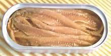
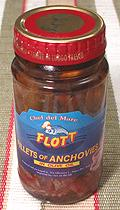

European anchovies are found on the west coast of South Africa all
the way up to Norway and in the western Mediterranean. Live they look
a lot like the California anchovy but are a little more elongated and
a bit smaller, growing to just under 9 inches. In Europe they are sold
fresh, frozen, dried and salted, but are familiar to Americans in cans
from Morocco. Unfortunately Morocco makes truly awful canned anchovies.
Photo by Jschop distributed under license
Creative Commons
Attribution-ShareAlike v3.0 Unported.
More on Anchovies.
|
Anchovies are a very important culinary ingredient, used in many salad dressings and sauces. A small amount of anchovy can significantly increase savory (umami) elements in a recipe without imparting a noticeable anchovy flavor. Other recipes use plenty of anchovy. Our Spanish Salad Dressing has lots of anchovies, and has been well liked by people who claimed they hated anchovies. For preparing fresh anchovies see California Anchovys. The California is a little bigger and a little stockier but otherwise pretty much the same.  Salted and canned anchovies are made by a method very similar to that used to make fermented fish sauce (Roman garum, Thai nam pla). The difference is that the heads and guts are removed before packing in salt - preventing the fish from digesting themselves down to clear liquid. The fish are layered with salt in barrels and rocks are put on top to keep them submerged for 6 to 10 months at controlled temperatures. After this time they are skinned, filleted and packed. From Roman times anchovies were salt packed but the oil pack we know today came into use during the 1800s. Unlike other canned products, no heat is applied when packing anchovies. Many chefs insist the salt packed are superior but that form is very hard to find in North America.  Morocco produces about 24% of the world's supply of canned anchovies and nearly half those imported into North America. Unfortunately the Moroccans are even worse at anchovies than they are at sardines, so that's really bad. I've had cans of Moroccan anchovies (multiple brands) that seemed mostly bones, fins and scales mixed in with a few over salted fillets that disintegrated to mush if touched. Those packaged for top brand names like Crown Prince, are better, but still not as good as from other sources. Unfortunately most Americans have tasted only Moroccan anchovies - so they either have an intense dislike for anchovies, or they are masochists. Spanish anchovies are widely considered the best, but are pretty much unavailable to most of us in North America. Italian anchovies can be found put up in glass jars (photo at left). A jar is costly, but a good investment. It'll keep over a year in the fridge, and after the anchovies are gone you can use the fine anchovy flavored olive oil. Trader Joe's has Italian anchovies in the familiar cans. I've purchased canned anchovies from Peru and Chili that were excellent, as good as the Italian. They were put up in the same 2oz cans the Moroccans use. I did get a distressed email from a Moroccan marketing guy who told me (among other things) the South American anchovy is inferior to the European, but so long as they make a fine product out of it, I couldn't care less. Norway used to be famous for anchovies, but the canneries have been replaced nu oil refineries since discovery of North Sea oil. Very fine anchovies are prepared in various ways in Spain and parts of Italy for local consumption. They are served as tapas and snacks in bistros and bars throughout Spain. American tourists won't touch them - and the Spaniards laugh. Warning: what is called "Anchovy" in Sweden is totally different from what the rest of the world calls Anchovy. Theirs are sprats canned in a special way. These can be found in the food section of Ikea stores, and not much of anywhere else. Many attempts to make Jansson's Temptation have been totally ruined by not knowing this. |